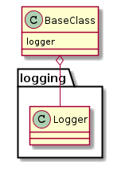
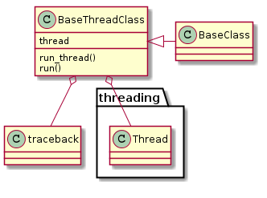

This is a module to hold base-classes for others to sub-class.
BaseClass() |
This class holds the minimum common features. | ||
BaseClass.logger |
|
||
BaseClass.log_error(error[, message]) |
Logs the error in bold red | ||
BaseThreadClass() |
Extends the base-class with a run_thread method that will log tracebacks on exceptions. |
This is the primary base-class. Sub-classes inherit a logger attribute so that they can send operational logging messages to a file.

This is an extension to the BaseClass that adds a run_thread method that logs tracebacks in the event that an exception is raised. Classes that sub-class it need to implement a run method for the run_thread method to call and a method to put run_thread into a thread. Has a default thread attribute that contains a threading.Thread instance with run_thread as the target and daemon set to True.
